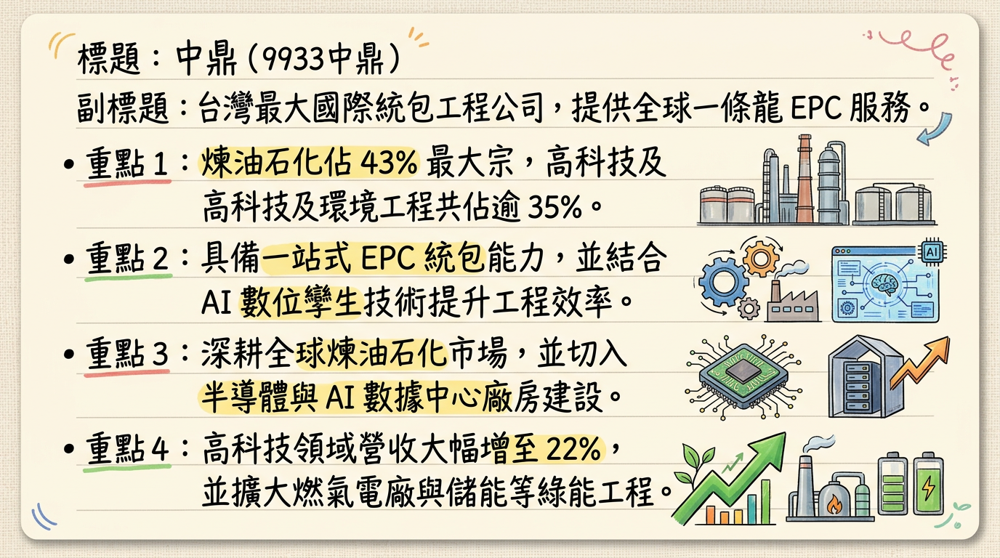
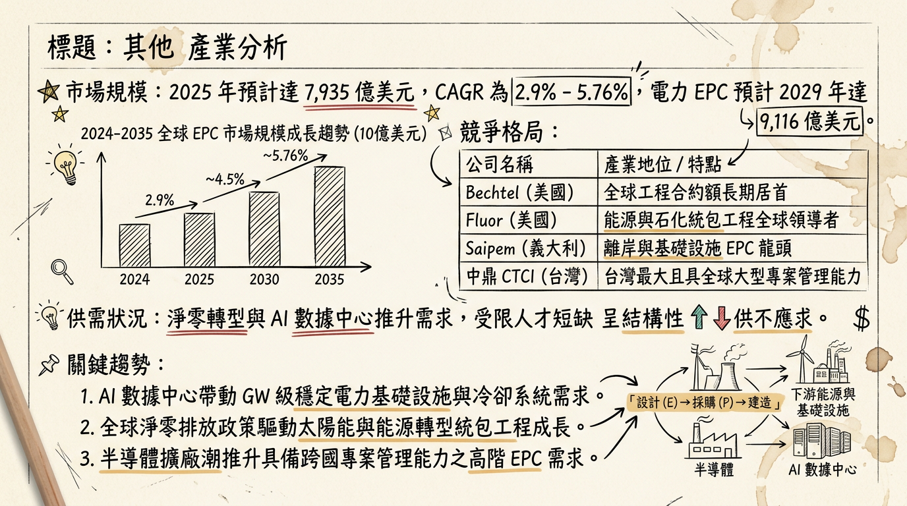
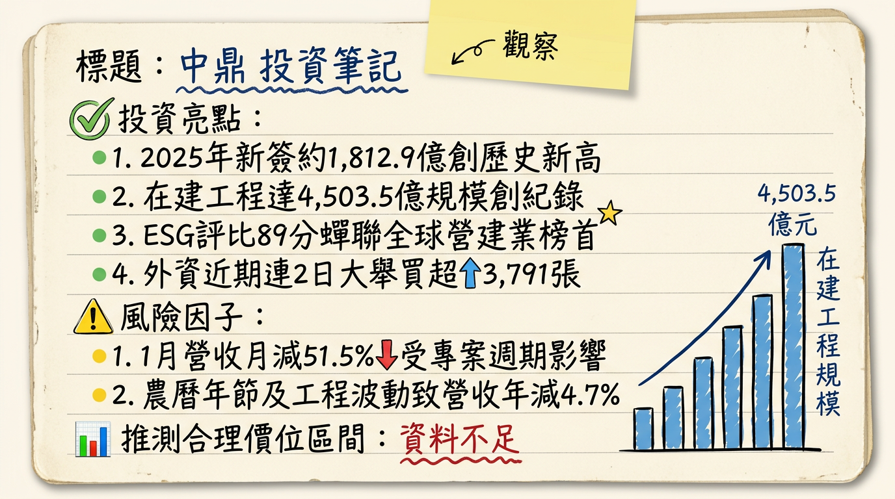

9933中鼎 中鼎 深度研究報告
一句話摘要
「走出美案陰霾，在手訂單 4,500 億創歷史新高，2026 年進入獲利全面復甦與能源轉型收割期。」
公司概覽
中鼎工程（CTCI）為台灣規模最大的國際統包工程公司（EPC），提供可行性研究、設計、採購、建造及維運的一條龍服務。
營收結構（依應用領域，2025年數據）
| 業務類別 | 營收佔比 | 核心內容 |
|---|
| 煉油石化 | 43% | 全球石化廠統包、煉油設施 |
| 高科技設施 | 22% | 半導體廠房、AI 數據中心、潔淨室 |
| 環境工程與基建 | 15~20% | 焚化爐（廢轉能）、海淡廠、再生水廠 |
| 電力工程 | 14% | 燃氣電廠、離岸風電、儲能設施 |
核心競爭優勢
全球工程管理能力： 連續四年蟬聯標普永續年鑑「全球營建工程業」Top 1%，具備國際大型專案執行力。
數位轉型領先： 導入 `CTCI Digital Twin` 與 AI 智慧平台，使工程錯誤率降低 20% 以上，縮短工期並優化報價。
綠色工程護城河： 擁有全台最大公共工程「新竹海淡廠」及多座再生水廠實績，搶佔淨零排放商機。
財務分析
月營收趨勢表（近 6 個月）
| 月份 | 金額 (億元) | 月增率 MoM | 年增率 YoY | 備註 |
|---|
| 2026/01 | 56.07 | -51.5% | -4.74% | 季節性回檔與年節影響 |
| 2025/12 | 115.60 | +71.36% | -15.29% | 年底結案入帳高峰 |
| 2025/11 | 67.46 | +15.03% | -29.28% | |
| 2025/10 | 58.64 | -26.84% | -29.45% | |
| 2025/09 | 80.16 | +20.59% | -11.7% | |
| 2025/08 | 66.47 | +1.51% | -33.0% | |
年度趨勢預估
- 2024 (實)： 營收 1,196.9 億，EPS 2.43 元。
- 2025 (估)： 營收 897.92 億，EPS 約 0.5-1.0 元（受 Q1 美國 GCEH 案 31 億元一次性減損影響）。
- 2026 (預)： 營收有望回升至 1,000 億大關，法人預估 EPS 落在 2.5 - 3.2 元。
法說會重點
- 在手訂單（Backlog）： 截至 2025 年底達 4,503.5 億元，創下歷史新高。
- 新簽約額： 2025 全年達 1,812.9 億元，同步創高。
- 未來商機： 預計未來 12 個月潛在投標金額達 9,820 億元（含台灣 5,480 億、海外 4,340 億）。
- 美國 GCEH 案： 重整計畫已於 2025/08 生效，150 億元應收帳款確認請求權，未來將視產出進度逐步回沖。
券商觀點
| 券商名稱 | 目標價 | 評等 | 日期 | 備註 |
|---|
| Fintel 綜合預測 | 52.49 元 | 買進/持有 | 2026/02/04 | 市場共識價 |
| 國泰投顧 | 38.0 元 | 中立轉看好 | 2025/11/10 | 考量美案風險淡化 |
| 元富證券 | 51.0 元 | 看多 | 2025/03/05 | ⚠️ 過時 (未計入 2025 減損) |
| Factset 調查 | 55.0 元 | -- | 2024/07/22 | ⚠️ 過時 |
財報深度分析
利潤率趨勢表格
| 指標 | 2025 Q3 | 2025 Q2 | 2025 Q1 | 2024 Q4 |
|---|
| 毛利率 | 9.28% | 7.66% | ~10% (排除減損) | 7.82% |
| 營業利益率 | 7.16% | 5.89% | 負值 | 穩定 |
| 單季 EPS | 0.85 元 | 0.32 元 | -1.52 元 | -- |
- 存貨分析： 存貨週轉率高達 148 次，存貨主要為待安裝材料，無堆積風險。
- 應收帳款： 週轉天數約 106 天。受 GCEH 案影響，部分帳款已重分類至「非流動資產」。
- 資本支出： 2023-2025 累計融資約 127 億，主要用於旗下「崑鼎」的綠能與水處理投資。
股權異動
- 申報轉讓： 2026/02/25 經理人彭俊賓、周書平分別申報轉讓 40 張與 20 張進行信託。
- 贈與規劃： 2026/01 經理人余俊彥贈與 79 張。顯示經營層近期多以稅務與股權信託規劃為主。
- 可轉債（CB）： 「中鼎二」(99332) 轉換價 51.8 元，目前股價（約 31.3 元）大幅折價，近期無轉換壓力。
產業分析
市場規模與競爭格局表
| 競爭對手 | 國家/地位 | 2025 表現 | 核心優勢 |
|---|
| 中鼎 (9933) | 台灣最大 EPC | 營收 ~918 億 | 綠色技術、電力 EPC |
| Bechtel | 美國/全球領先 | 營收規模極大 | 大型複雜專案管理 |
| Fluor (福陸) | 美國 | 具 AI 估價技術 | 石化、電力 EPC |
| 聖暉 (6126) | 台灣同業 | 毛利 ~20% | 專攻高科技無塵室 |
| 漢唐 (2404) | 台灣同業 | 毛利 ~12% | 半導體廠房統包 |
近期催化劑
1. 2026 Q1 獲利若展現 GCEH 重整後的轉盈能力。
2. 台電通霄、大林發電機組大型專案入帳高峰。
3. 與鴻海合作之 AI 數據中心機電工程進度推進。
1. 美國 GEH 廠產能若未達標，150 億帳款回收延遲。
2. 中東地緣政治波動影響當地石化標案進度。
3. 高負債比（80.5%）帶來的利息支出壓力。
⭐ 成長動能時間軸
- 2025 Q4 - 2026 Q1： 電力工程進入施工高峰期，營收佔比顯著提升。
- 2026 Q2： 預計公告 2025 年配息，雖獲利回穩但配息可能因去年虧損而保守。
- 2026 Q3： 氫能儲存與輸送管線示範計畫啟動；AI 數據中心機電專案開始貢獻營收。
- 2026 - 2030： 台灣「以氣代煤」政策帶動 3,000 億電廠更新商機；國內 10 座焚化爐汰舊換新。
2026 展望
- 成長動能： 在手訂單達 4,503 億元，能見度達 3-5 年。電力、高科技、環保工程等「非石化」業務佔比提升，有助於分散單一產業風險並提升毛利。
- 風險： 雖 GCEH 案已重整，但實質現金回收仍需視該廠營運產出；全球缺工與物料通膨可能侵蝕固定總價合約之毛利。
投資結論
評價面優勢： 目前股價位階（約 31.3 元）處於歷史淨值比低檔，已充分反映 2025 年美案呆帳利空。
營運轉折： 2026 年為獲利回歸常軌之首年，預期 EPS 回升至 2.5 元以上。
訂單紅利： 歷史新高的在手訂單為未來營收提供高度保證，「擇優接單」策略將拉高毛利率。
建議目標價區間：
* 短線觀察： 35.0 - 38.0 元（反彈至法說會前水平）。
* 中長線目標： 43.5 - 51.0 元（參考 Fintel 共識價與 2026 獲利預估）。
本報告由 AI 自動產生，資料來源為公開網路資訊，僅供參考，不構成投資建議。產生時間：2026-03-01 21:31
📊 資訊卡


